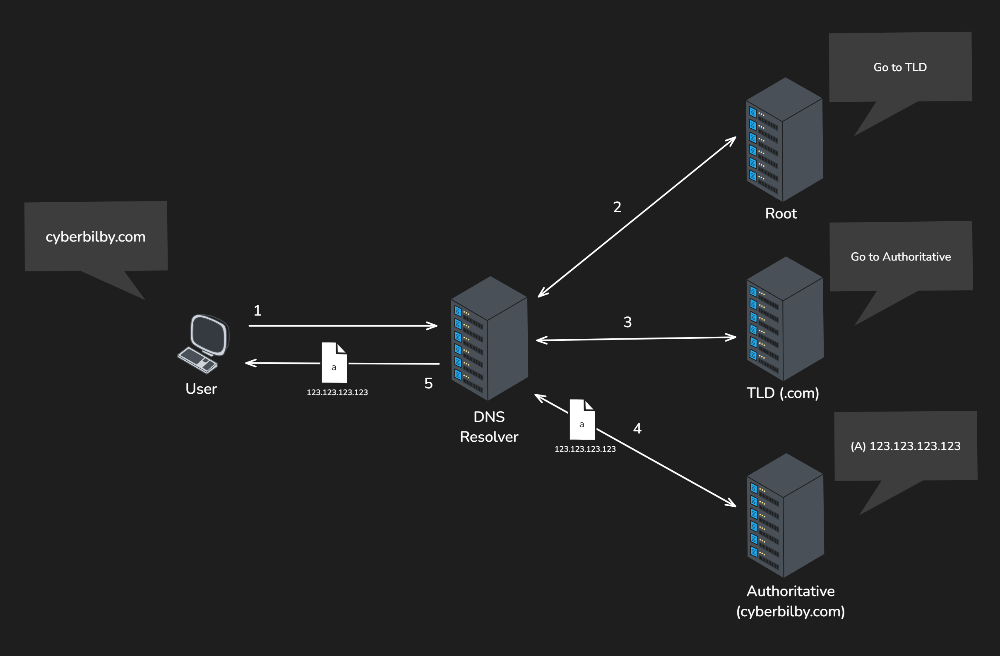
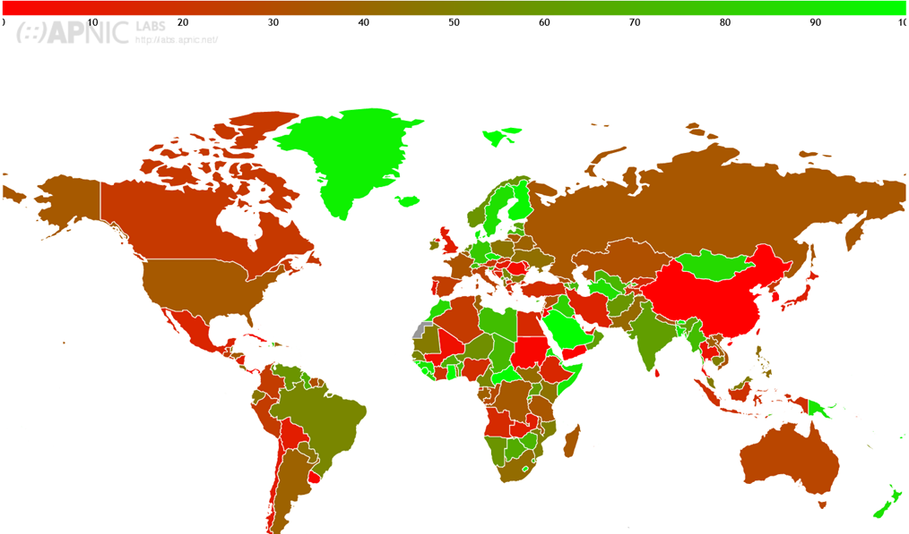
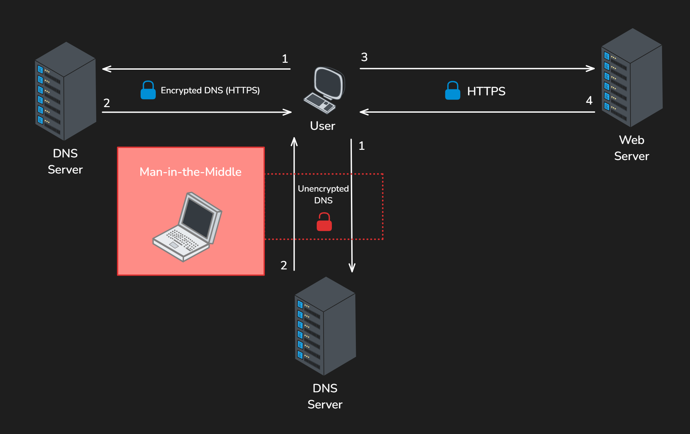

Introduction
This report dives under the surface to talk about two technologies that help secure the domain lookup process when you are resolving domain names.
- Domain Name System Security Extensions (DNSSEC)
- DNS over HTTPS (DoH)
Before understanding how DNSSEC works the report first gives a brief overview for how users connect to domains through the Domain Name System (DNS) and how domains are resolved to IP addresses through nameserver lookups.
It also addresses why the traditional method of DNS can be insecure and what types of attacks you are vulnerable to. It then talks about how those lookups can be validated with Domain Name System Security Extensions (DNSSEC) to ensure when you are resolving domain names that the information you receive is accurate and trustworthy.
Furthermore, it details the implementation complexity, the adoption of DNSSEC globally and a case study on an attack which could have been mitigated by DNSSEC.
To compliment DNSSEC this report also dives into what can be done not just to ensure domains are validated but ensure the queries for those domains are protected using encryption for privacy through a technology called DNS over HTTPS (DoH).
What is DNS?
Overview
Before delving into the two technologies, you must first under DNS. Domain Names System (DNS) is like the phone book for the internet, invented by the Stanford Research Institute in the early 80’s to map hostnames to IP addresses which solved the problem of trying to remember numerical addresses (IP Addresses).
Nowadays, DNS is used everywhere from private to public networks and is a widely adopted solution for resolving IP Addresses.
How does it work?
When you visit a website like https://cyberbilby.com/ for the first time your computers DNS Client checks to see if your computer has already cached the IP Address of the domain you are looking for, if not it contacts the DNS Caching Recursive Resolver which is typically hosted by your Internet Service Provider (ISP).
This resolver also has its own caching for retrieving the IP address of the web server and if it’s not cached here, it will contact nameservers and ask for the information. This is known as a DNS Lookup.
Nameserver Hierarchy
When the DNS resolver contacts the nameservers, it does it in order based on a hierarchy: The root nameserver is where the resolving process starts, it contains information about the Top-Level-Domain (TLD) nameservers.
The TLD nameserver contains information about the Authoritative nameservers. The authoritative name servers hold records about the domain being resolved

Nameserver Lookup
Information about the domain is stored in these nameservers as Resource Records. The two common records returned are the A Record (IP Address) and the CNAME Record (ALIAS/Hostname). If the A record is present, the IP address is returned. However, if the CNAME record is present (takes precedence over A record) then the DNS Lookup is started again using the value of the CNAME record.
The user sends a DNS query for cyberbilby.com to the resolver (1), the resolver contacts the root nameserver (2), the root name server redirects the resolver to the TLD nameserver for .com (3), the TLD nameserver redirects the resolver to the authoritative nameserver for cyberbilby.com (4), the authoritative nameserver returns the A record containing the IP address to the resolver which returns it to the user (5).

Why is this insecure?
When an IP address is resolved from a domain name there is no guarantee that the address returned is legitimate or the original intended address. This is because the records may have been tampered with by a man-in-the-middle altering them which could result in a poisoned DNS cache.
The resolution process also happens over an unencrypted channel making it so an eavesdropper (man-in-the-middle) can read the requests and responses in plain text. (Even when connecting to websites over HTTPS) The following two technologies (DNSSEC & DNS over HTTPS) are solutions for these two key areas of concern.
What is DNSSEC?
Overview
Domain Name System Security Extensions (DNSSEC) is a feature on top of DNS that was created by the Internet Engineering Task Force (IETF) in the late 90’s to solve the problem of applications accepting falsified or forged DNS records which lead to attacks like DNS Cache Poisoning.
How does it work?
DNSSEC works by adding an extra layer of trust on top of DNS by providing authentication through cryptographic signatures of the DNS Resource Records for the domain you are resolving which is stored on the nameservers. DNSSEC only protects the authenticity of the information being exchanged and is not a protection of privacy solution.
The cryptographic signatures exist at every level of the resolving process to ensure that none of the information is tampered with along the way, creating a chain of trust. This process is possible by providing a new set of record types known as:
- Resource Record Signature (RRSIG) – Holds a Cryptographic signature of an RRSET
- Domain Name System Key (DNSKEY) – Public signing key of RRSIG
- Delegation Signer (DS) – Hash of DNSKEY record
When a client tries to resolve a domain name (e.g. cyberbilby.com) by requesting a record type like the A Record, the name server will return the RRSIG of a Resource Record Set (RRSET) which is a set of records with matching types (in this case, all the A records). This signature is signed by a private key which is held by the root zone owner, the resolver can then pull the public key (DNSKEY) to validate the records. The DS record is also pulled from the upstream nameserver to verify it came from the correct nameserver.
Cryptographic Security Chain

Implementation Complexity
Implementing DNSSEC can be very easy if you use a common registrar like Cloudflare, Namecheap, AWS Route 53, or GoDaddy as it is usually just one toggle button in their respective dashboards for the domain name settings.
There are not many providers that do not offer DNSSEC, however there may be some cases where it needs to be configured manually which increases the implementation difficulty substantially.
Global Adoption & Concerns
The adoption of DNSSEC is quite low in many regions of the world, except in some key countries which have over 90% adoption: Greenland, Iceland, Mongolia, Central African Republic, Finland.
DNSSEC Validation Rate by Country (%)
 (DNSSEC Validation Rate by country (%), APNICLABS, 2024)
Why is the adoption rate low?
Despite the ease of implementation for most users , the reason for low adoption could be that people are either not aware of the feature, do not think it provides any additional security over HTTPS Certificates, or think the attack surface is too rare to implement.
There is also some concern around the secure implementation for DNSSEC as in the past it has been redesigned for reasons related to security & scalability, and vulnerabilities existing such as the KeyTrap vulnerability (patched in some providers such as Cloudflare) discovered in December of 2023 that allows attackers to send a Denial of Service (DOS) attack to DNS servers with specially crafted packets.
Real World Example
In 2018 hackers used DNS spoofing to redirect traffic from an online cryptocurrency website to an identical version of the website which was a phishing login page. This page would capture credentials and then steal the user’s cryptocurrency after logging in.
They did this by abusing the Border Gateway Protocol to convince the AWS core router to reroute traffic to the attackers DNS server. This resulted in new DNS Lookups to resolve the attackers IP address instead of the original intended address for the cryptocurrency web server.
This attack could have been mitigated if DNSSEC was enabled for the domain.
What is DNS over HTTPS?
Overview
DNS over HTTPS (DoH) was published (RFC 8484) in 2018 by the Internet Engineering Task Force (IETF) to solve the problem of user privacy for DNS queries, as traditional DNS queries are done over unencrypted channels using UDP/TCP whereas the goal of DoH is to use the encrypted HTTPS channel to answer the DNS queries.
How does it work?
Browsers with DoH support send their DNS queries to a DoH supported DNS server similar to the traditional DNS queries but using HTTP Requests like GET and POST. These requests use the application/dns-message MIME Type to transfer the data to/from the DNS server. This makes the queries very difficult to spot to eavesdroppers as the information is blended in with normal HTTPS traffic.
DNS Query (Unencrypted vs Encrypted)
The user contacts the DNS server (1), and the server responds (2). It then initiates contact with the web server (3) and the web server responds (4). If DoH is enabled, it will take the left most route over the encrypted HTTPS channel instead of the route down through the traditional unencrypted DNS channel.

How secure is it really?
Although it is an improvement over unencrypted DNS queries, there is still concern for privacy with the DNS queries sender being visible to the DNS server.
To solve this problem Oblivious DNS over HTTPS (ODoH) was created and is currently deployed and maintained by companies like Apple and Cloudflare. This technology works by having a proxy in between the client and the DNS server to ensure that the server cannot make a connection between the clients and their queries data
Implementation Complexity
DNS over HTTPS is enabled by default in Mozilla Firefox and Google Chrome browsers which means any DNS servers that have this technology supported can utilize its features. BIND, which is the standard for DNS servers supports DNS over HTTPS and is relatively easy to setup through the configuration files and is very similar to setting up HTTPS for a website (configuring certificates and TLS).
Global Adoption
The adoption of this technology is evolving as it is still in its early experimental stages and other protocols exist that achieve the same result (DNS over TLS, DNS over QUIC), however big names like Google and the Mozilla Foundation have picked it up and enabled it in their web browsers (Firefox, Chrome) so the adoption is growing.
Why use DoH over others?
There are a few other DNS over encrypted solutions that have a higher adoption than DoH, however due to the nature of how it works (over HTTPS) by hiding the traffic among normal HTTPS traffic it is preferred over other methods.
For instance, if you were using the DNS over TLS (DoT) solution, this traffic looks different to HTTPS traffic and can be detected. This is a concern for people with Internet Service Providers (ISP) who are monitoring and/or blocking certain domain resolutions.
Conclusion
While DNS is an essential and powerful tool for internet functionality to make it easier to connect with each other, its security limitations necessitate additional measures like DNSSEC and DNS over HTTPS to protect users from potential attacks like DNS spoofing or eavesdroppers.
They both serve different but very similar purposes, and that is to help secure the DNS resolution process. However, they can both work in harmony and are not designed to be used one over the other. The purpose of DNSSEC is to ensure the DNS responses that are received maintain their integrity by checking if the records have been altered in transit. The purpose of DNS over HTTPS is to hide the DNS queries from eavesdroppers through encryption and blending it with normal HTTPS traffic.
The adoption of DNSSEC and DNS over HTTPS is quite low in many regions of the world likely due to ignorance of its existence, misunderstanding its importance, concerns around its implementation of security and being in its early stages of development. But despite this I can see the drive for DNS over HTTPS by big names like Google and the Mozilla Foundation making this a standard for DNS resolution.
Glossary
DNS Cache – A DNS Cache is a storage location where your client or server can store information for mapping domain names to IP Addresses to avoid repeated nameserver lookups which wastes network resources.
DNS Cache Poisoning – DNS Cache Poisoning is when an attacker compromises a DNS response to poison a target DNS cache with an attacker IP Address, this ensures the victim connects to the attacker’s server instead of the intended server.
DNS Client – The service on your computer responsible for sending out DNS queries and caching their results.
DNS Spoofing – DNS Spoofing is the result of a DNS poisoning attack.
Denial of Service (DOS) – DOS is a common attack which is used to disrupt services and can be done in a variety of ways including but not limited to: initiating many connections to a server to fill up the connection queue, exploiting a vulnerability in a system to use up resources so further requests cannot be processed.
HTTP GET/POST – HTTP GET and POST requests are HTTP methods that allow the getting or submission of data between a client and a web server.
Internet Engineering Task Force (IETF) – The IETF is an organization that is responsible for the maintenance of the internet standards that make up the internet protocol. This organization is made up of volunteers.
KeyTrap – KeyTrap (CVE-2023-50387) is a vulnerability in the implementation of DNSSEC that allows an attacker to send a specially crafted packet to spike the CPU consumption in the target DNS server which results in a Denial of Service (DOS) due to lack of CPU resources to process any more requests.
Recursive Caching Resolver – A Recursive Caching Resolver is the first stop in the DNS Lookup process and acts as the middleman between the nameservers and the DNS client. When a lookup is completed, it is also responsible for caching that result. However, if a nameserver does not contain the record the resolver is looking for it will look move through the nameserver hierarchy and repeat the process (recursively).
WireShark – Wireshark is a protocol analyser software that allows you to inspect traffic going through your Network Interface Card (NIC).
References
- DNS over HTTPS. (2024, June 02). Retrieved 06 06, 2024, from Wikipedia: https://en.wikipedia.org/wiki/DNS_over_HTTPS
- DNS root server. (2024). Retrieved June 01, 2024, from Cloudflare: https://www.cloudflare.com/learning/dns/glossary/dns-root-server/
- DNS server types. (2024). Retrieved June 01, 2024, from Cloudflare: https://www.cloudflare.com/learning/dns/dns-server-types/
- DNSSEC Validation Rate by country (%). (2024, June 05). Retrieved from APNIC LABS: https://stats.labs.apnic.net/dnssec
- Domain Name System. (2024, June 04). Retrieved June 01, 2024, from Wikipedia: https://en.wikipedia.org/wiki/Domain_Name_System
- How DNS Works. (2024). Retrieved June 02, 2024, from Cloudflare: https://www.cloudflare.com/en-au/dns/dnssec/how-dnssec-works
- Keytrap: How to break a DNS server with a single packet. (2024, February 19). Retrieved June 05, 2024, from Kaspersky: https://www.kaspersky.com.au/blog/keytrap-dnssec-vulnerability-dos-attack/33266/
- Nichols, S. (2018, April 24). AWS DNS network hijack turns MyEtherWallet into ThievesEtherWallet. Retrieved June 05, 2024, from The Register: https://www.theregister.com/2018/04/24/myetherwallet_dns_hijack/
- What are DNS records? (2024). Retrieved June 01, 2024, from Cloudflare: https://www.cloudflare.com/learning/dns/dns-records/
- What are DNSKEY and DS records? (2024). Retrieved June 04, 2024, from Cloudflare: https://www.cloudflare.com/learning/dns/dns-records/dnskey-ds-records
- Wikipedia. (2024, May 28). Retrieved June 01, 2024, from Domain Name System Security Extensions: https://en.wikipedia.org/wiki/Domain_Name_System_Security_Extensions